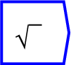

This produces the square root of the input value.
For example, connecting the value of 9 with the ``sqrt'' block will produce the value of 3. As with all Ravel operators, this function accepts multidimensional arguments.
The operator can be placed on the canvas in two ways: